This tour consists of 18 screens, each of which is described in a section of this
page:
(The screenshots in this tour were made with ArgoUML v0.5.1)
Back to ArgoUML Tours
Back to ArgoUML Home
| 01. Splash Screen | TOC | Next |
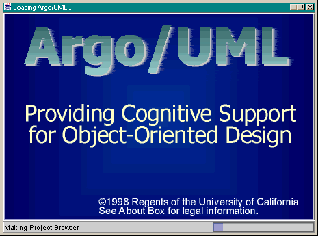
This is what users see while ArgoUML loads.
| 02. Blank Design | Back | Next |
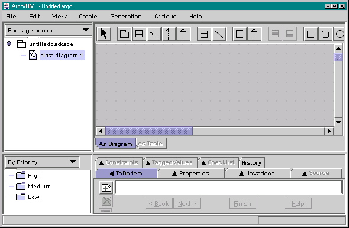
The tool starts with an empty design document.
| 03. Adding Classes | Back | Next |
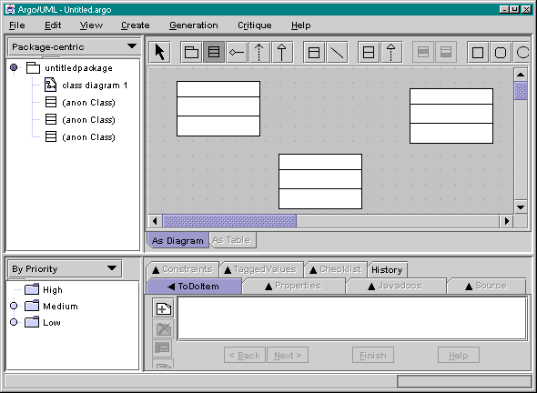
Classes can be added to the untitled diagram by clicking on the class icon in the
toolbar.
Double clicking on a toolbar button "locks" that tool untill the arrow tool is selected.
The yellow sticky notes and wavy, red underlines indicate incomplete or problematic parts of the design.
Placing the mouse over a sticky note or wavy line will display a blue tool-tip that briefly describes the problem.
| 04. Naming Classes | Back | Next |
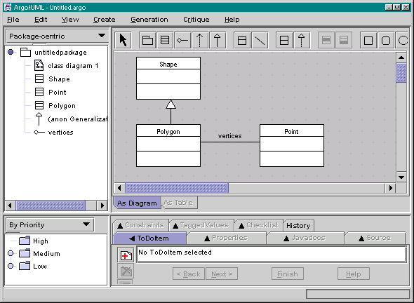
The user can set the name of a class or association by simply selecting it and typing.
| 05. Direct Text Editing | Back | Next |
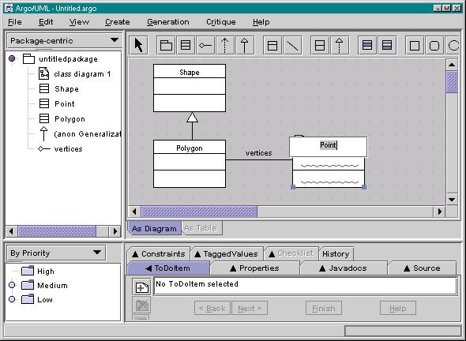
Double clicking on a name allows the name to be edited. You can double click on the other compartments of the class to edit them.
| 06. Class Properties | Back | Next |
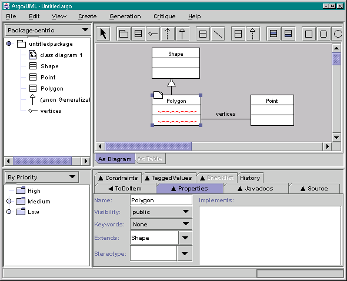
The "Properties" tab int the details pane shows details of the selected model element.
| 07. Association Properties | Back | Next |
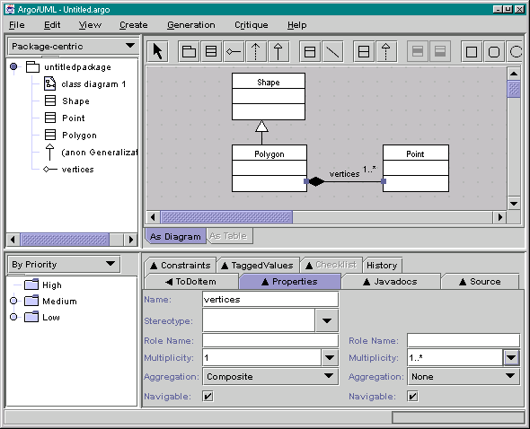
Asssociations also have properties.
| 08. First "To Do" Item | Back | Next |
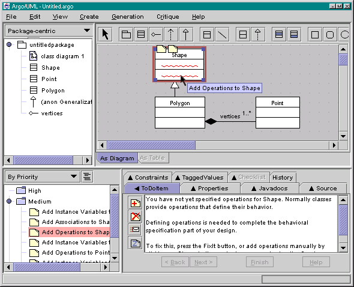
ArgoUML contains design critics that continuously analyze the design and produce
"to do" items that point out problems and incompleteness.
When a "to do" item is selected, the "offending" element of the design is highlighted in red
and a brief description is shown in the details pane.
| 09. Adding an Operation | Back | Next |
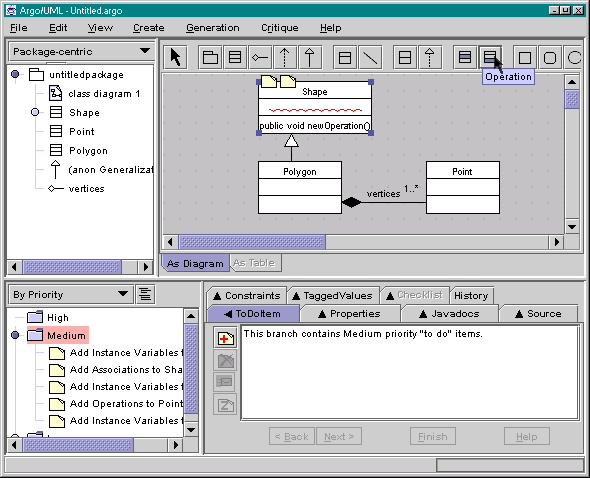
The user decides to follow this critic's advice and add an operation via a toolbar button.
| 10. Operation Properties | Back | Next |
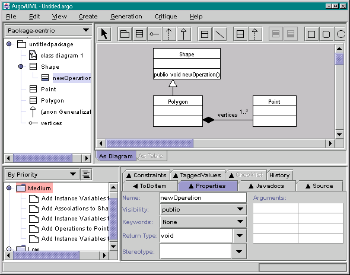
When a model element is selected
in the explorer, its details are shown
in the "Properties" tab.
Note that the criticism that class Shape has no operations has been automatically removed.
| 11. Operation Checklist | Back | Next |
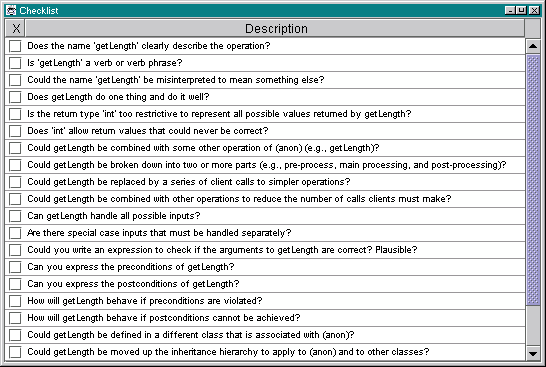
Design checklists are commonly used in review meetings to help catch design errors
and prompt thinking.
Argo provides checklists that are specific to the selected model element.
| 12. A Java-specific "To Do" Item | Back | Next |
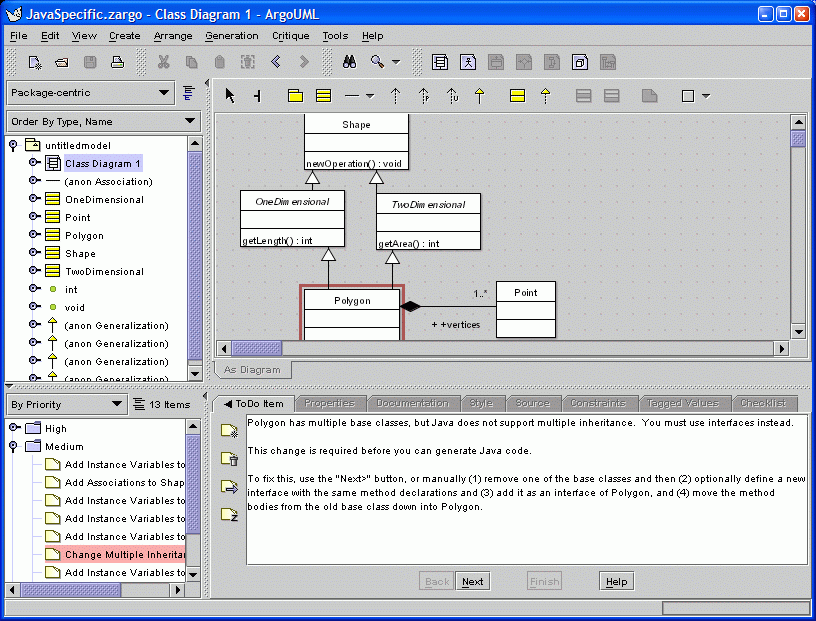
This is an example of a critic with knowledge of limitations of the target language.
| 13. Class Source Code | Back | Next |
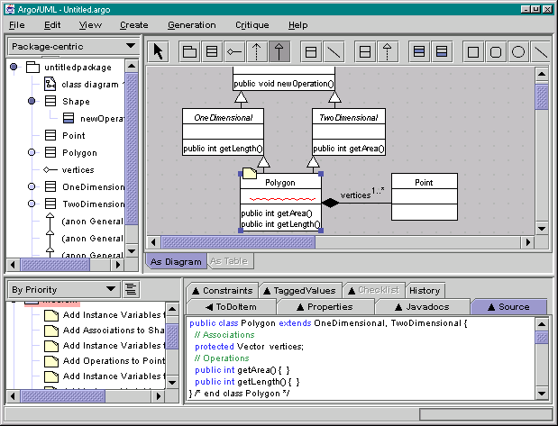
Source code for the selected model element is shown in the "Source" tab
if appropriate. In the future, ArgoUML will parse what the
designer types here and update the model. This screenshot also shows Argo's ability to place unstructured graphics
in diagrams.
Not shown: the designer can enter comments in JavaDoc format by using the "Javadocs" tab.
| 14. Inheritance-centric Perspective | Back | Next |
The explorer can show any one of
several task-specific hierarchical views
on the model. Each view is called a "exploring
perspective" and clarifies a certain kind of structure in the model. Here, inheritance is emphasized. Other
explorer perspectives
emphasize associations, states, or transitions.
| 15. Dismissing a "To Do" Item | Back | Next |
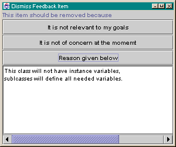
This critic reminds the designer to add instance variables to class Shape. The
designer considers the advice but decides against following
the critic's advice, and clicks the "Resolve Item" icon to dismiss the item.
The "Dismiss Feedback Item" dialog prompts the designer to record an
explanation for his or her decision. This explanation will be added
to the design history for later reference.
| 16. Design History | Back | Next |
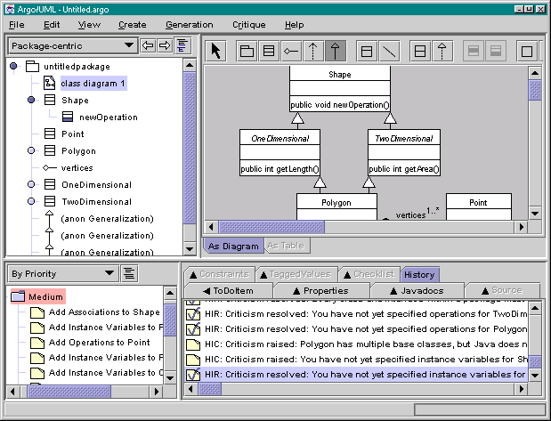
All criticisms and their resolutions are recorded in a design history for later
review. In the future, Argo will also record design changes and
the causal relationships between changes and criticism being produced or withdrawn.
| 17. Customizing a Perspective | Back | Next |
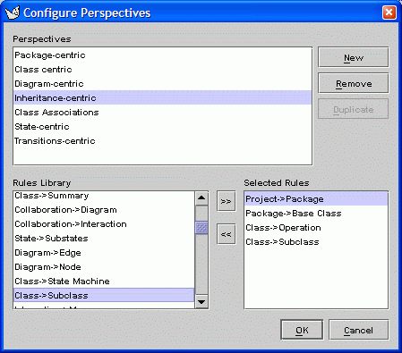
This dialog allows designers to customize
or define new explorer perspectives.
Each perspective is composed from a set of rules
that generate the children of each node in the tree. Here we see that the Inheritance-centric perspective will
start at the project, packages
in a project will be shown, base classes in a package will be shown, and each class will show its subclasses. As
an example, we have
added in a new rule that makes each class show its operations.
| 18. Modified Perspective w/ Javadocs | Back |
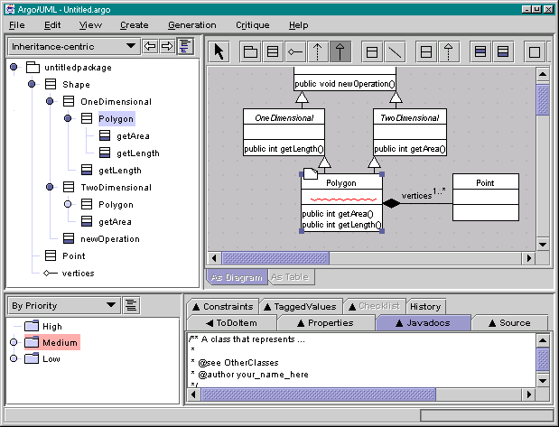
This is the result of modifying the Inheritance-centric perspective to also show
operations by selecting rule "Class -> Operations".
Compare this to screenshot 14.